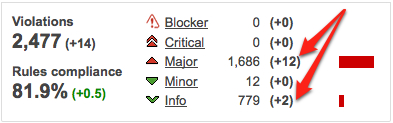
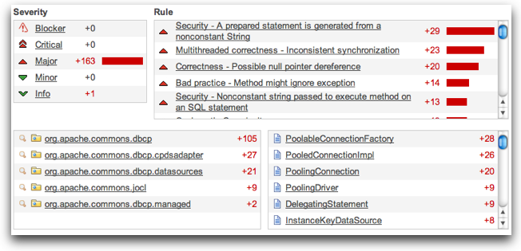
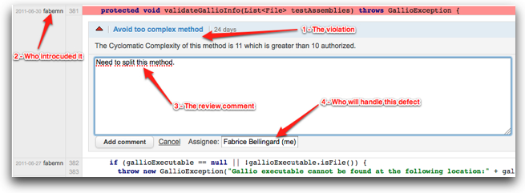
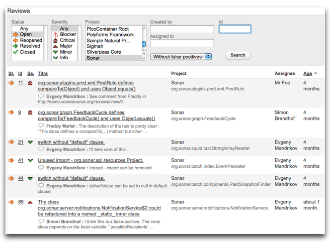

Your, my, our problems...
... to the Rescue, hopefully
Know your tools
Hands on
Use differential views to see what's new.
 Create a review for the developer who introduced a new violation.
Use Sonar to list and filter your reviews.
If you want to stay in contact.
felix.mueller@adesso.de
@fmueller_bln
gplus.to/fmueller
/